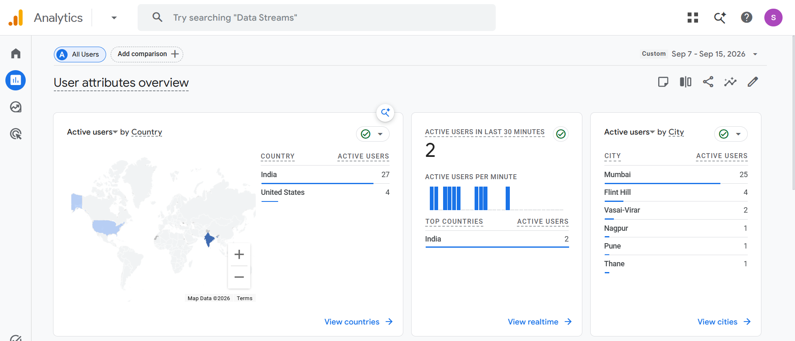

Mid-Week Drop: The Ghost Website Isn't So Much of a Ghost Anymore 👻
September 16, 2026
Belcome wack!
Yes I lost my mind……in a good way though.
Remember back in Week 4: Egos, Exes, and Coding Through the Chaos blog, I mentioned about how I’m missing my WIX era where I had all those fancy admin panel using which I used to get various crazy insights about the site……and the one Romanian visitor that made my day.
Guess whattttttttttttt
I did it again!!! 🗿🗿🗿
I got 31 active visitors in the past 7 days, out of which 4 were from the United States!!!!! 4 people from ANOTHER CONTINENT. Reading something I made. At first I was in disbelief so I did the obvious thing known to mankind —
ctrl + shift + R — 6 TIMES.
The numbers didn’t change. Looking down at the screen the inner kid in me was goin crazyyyyyyy
Here’s the screenshot:

Now yes, I know what you're probably thinking.
“31 visitors coming to ur site and reading ur blogs? Four from the US? That's not exactly breaking the internet.” And you're absolutely right. By internet standards, this is microscopic. But for me? This is HUGE.
Coz a few weeks ago this site was basically just a bunch of HTML files with black text, white background like they teach web.dev. to freshers at schools/cllgs and the teacher goes “Congratulations, you've made a website.”
When I started this website I didn’t know anything about the tools, framework and stuff I’m using today….never in my wildest dream did I imagine me developing an actual website which is SEO optimized, listed on google search console, has a sitemap, and now an actual analytical system!!!!
And the best part???
I built all of it myself😏🗿
That realization probably made me happier than the actual number. Because when I first started building this thing, I wasn't thinking about analytics or search engines or international visitors. I was literally just trying to make my boring little website look less boring. And somehow that turned into this.
Now, for people who are wondering how did I do this……the short answer is google analytics.
Tbh it’s pretty simple (considering how goated I’m). You go to GA and say, "I have a website, and I need a secure place to store data about its visitors”. Then it gives u ur own unique ID along with a small JavaScript snippet which we are supposed to paste in every single html file that exists on our website……in simple words it’s the sensor that senses activity…. without it u won’t get any reading of those pages.
DONE.
Just a little piece of JavaScript quietly doing its job while I sit there refreshing the dashboard like a maniac😅😅😁
AS EASY AS THAT.
Now, back to those four American visitors.
I was so excited and eager to tell someone that I had people from another country visiting my website and reading my blogs, and unfortunately, the person sitting next to me happened to be my father.
So I told him that I write blogs and stuff (all he knows about me is I have my eyes locked in either my phone or laptop, simply put he thinks I just waste time all day everyday)
I told him that people were actually visiting my website. I told him that I had visitors from all the way across the globe. And his reaction?
“hm 🥱”
I was like wtf🫠😭
I was expecting at least a “that's pretty cool.” Maybe a smile. Maybe a tiny bit of fatherly pride. Instead, I got the human equivalent of a phone on 2% battery😭😭😭
Apparently, four international readers are not enough to impress him.
Koina… I’m sure that if I keep doing this, those 4 visitors will eventually become 40. Then 400. Then 4,000. And maybe... just maybe... my dad will finally look at me and think: “Okay. Maybe this kid isn't just wasting time on his laptop all day.” 😤❤️🩹
Until then, I'll happily take my four Americans. The ghost website isn't so much of a ghost anymore👻😁
If this chaos somehow resonated with you, go bother a friend with the link.